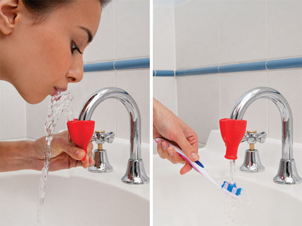

Dreamfarm | Tapi | Tap/Faucet Squeeze Drinking Fountain

One of my early blog posts was about a product similar to this. Tapi seems like it would have troubles on the vast majority of faucets in my home, but Jokari (the company who makes the original gadget I blogged about) doesn't look as nice or function as well. Either way, these types of things are a dream to have.
- Prior: buckeyes | smitten kitchen
- Next: The Speech Accent Archive